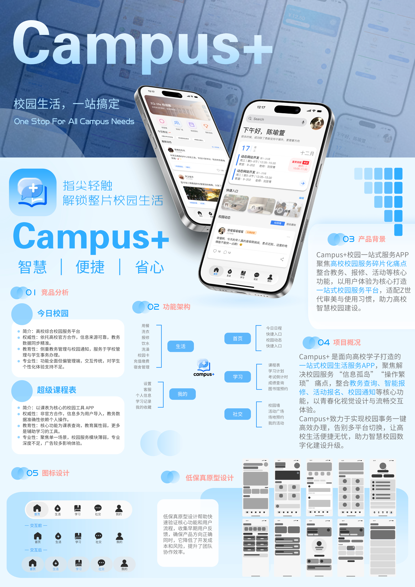

02 / 项目案例
Campus+
校园一站式服务 App
UI/UX Design / Campus Services / Mobile App
项目概览
Project Overview
Campus+ 是一款面向高校学生的一站式校园服务 App，旨在解决校园服务信息分散、功能入口复杂、不同平台之间切换不便等问题。
应用整合课程查询、校园生活、宿舍服务、校园活动等日常需求，通过统一的信息架构和直观的移动端界面，让学生能够更加便捷地获取校园信息与服务。
设计重点在于整合校园服务入口、优化信息呈现方式，并提供清晰、高效的移动端使用体验。
项目展板
Project Board
